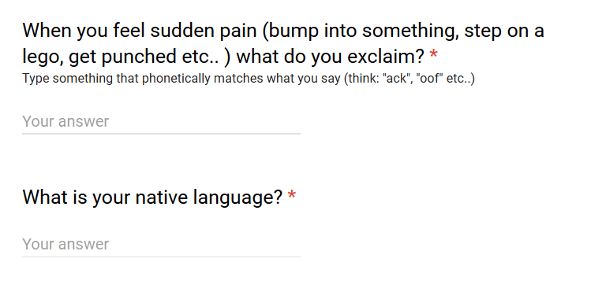

The questions no one cares about, but everyone's wondering
The question was:
And I received a total of 89 responses in 12 different languages.
But instead of just showing a table of the various phonetic ways to express pain around the world, I thought it would be more fun to record myself performing the 46 unique grunts, yelps and swears that the St. Olaf community uses to express pain, and allow you to explore them for yourself!
Warning: Some cultures do swear to express pain.
Click on a country to hear its expression of pain.
As always, you can peruse the raw data here.
This was a lot of fun to record. In some of the samples you can hear the smack I did to try and trigger a real pain response and make these sounds more natural.
Something very interesting that I noticed was that it was very difficult to get all the sounds triggered by the same physical response. It's very hard to train yourself to say "Shit" upon getting slapped in the face. It just doesn't feel right. Which makes me wonder what kind of pain people filling out the survey were imagining when they filled it out, and whether that is the cause of some variance in sounds. I wonder if there would be a way to design a study to truly learn what different cultures & languages exclaim upon being slapped in the face (short of actually just walking around and doing that).
I began thinking about this question during my freshman year. I was walking around the quad one day with a friend when I bumped into something. Of course I exclaimed, "Ayy!" which is the Arabic way of experssing pain. Upon realizing that I had accidentally said an Arabic word, I corrected myself, "Oops, I mean, ouch!"
Now my mono-lingual friend thought it was rather silly that I corrected myself. After all, "ouch" isn't really an English word, it's just a natural expression of pain. But the more I thought about it, the more I realized there's really nothing "natural" about the three syllables making up the most common English expression of pain.
Other non-native English speakers I've talked to about this survey have mentioned that they say ouch only when they're in the US!
The words you reach for instictively when you experience pain are interesting to me because it's like a window into how you think, with no masks or filters. What choice do you make when you're not making it consciously? I speak English fluently and am even more comfortable expressing myself in English than in Arabic. But I still owe my visceral reaction to pain to the place I grew up.
I can pretend to be a native English speaker all I want, but at the end of the day, all it takes to give me away is a slap on the face.
– Omar